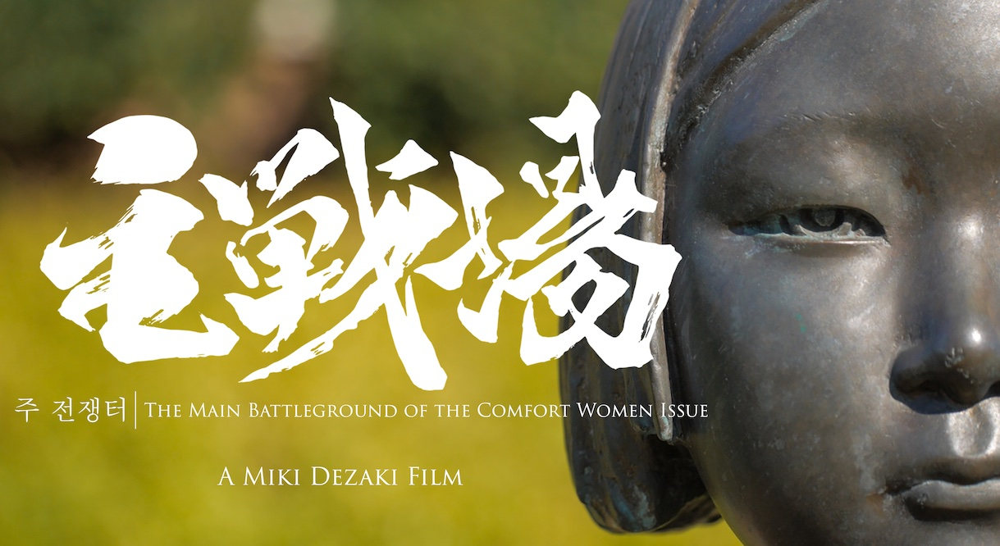
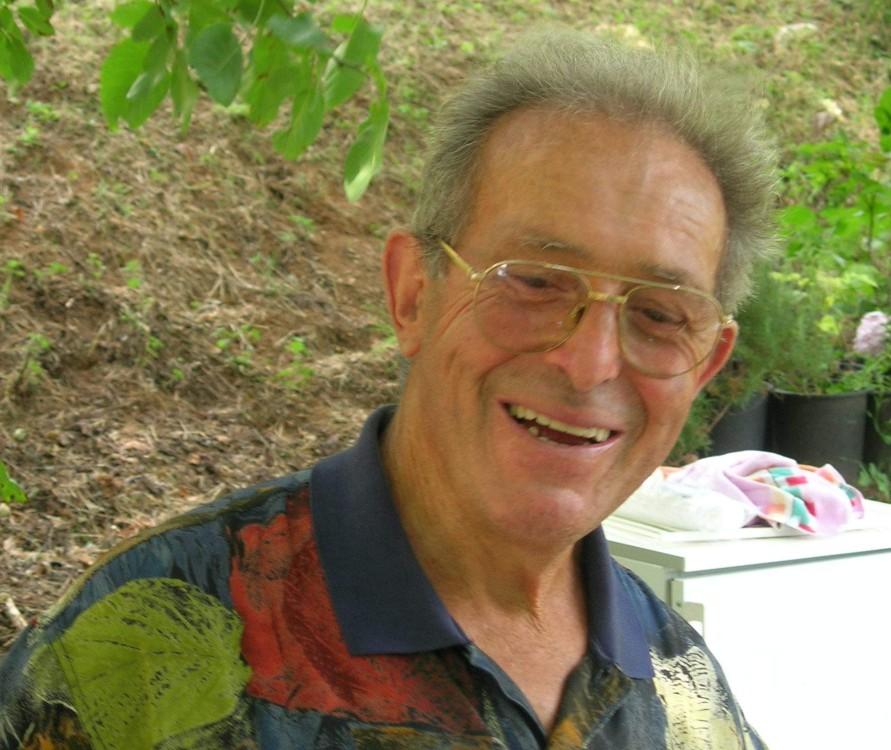

AK-Distomo
Start
|
”Ich heiße Kim Bok-Dong”
Eine Überlebende sexueller Kriegsgewalt im Kampf um Gerechtigkeit
Film und Gespräch
Mittwoch, 4. Oktober 2023, 20:00 Uhr (Einlass ab 19:30)
Wo: Lichtmeß-Kino, Gaußstrasse 25, 22765 Hamburg
Eintritt: Spende
Zwischen 1932 und 1945 zwangen die japanische Armee und ihre Kollaborateure Zehntausende Frauen und Mädchen
aus 14 Ländern in die sexuelle Versklavung in so genannten ”comfort stations”. Mit
diesen Einrichtungen wollte die Militärführung ihre Soldaten psychisch und physisch stärken.
Für die betroffenen Frauen und Mädchen bedeutete dies tägliche Vergewaltigungen, Gewalt
und Entwürdigung, oft über Jahre.
Kim Bok-Dong (1926-2019) war eine dieser ”comfort women”. 1992 fand sie den Mut, öffentlich
auszusagen und von ihren Erfahrungen zu berichten. Bis zu ihrem Tod im Jahr 2019 kämpfte sie gemeinsam mit
anderen Überlebenden und einer internationalen Unterstützungsbewegung für Anerkennung und
Gerechtigkeit. Der Dokumentarfilm des Regisseurs Song Won-Geun zeichnet ein vielschichtiges Bild der
Frauenrechtlerin und Friedensaktivistin Kim Bok-Dong. Mit unermüdlichem Engagement forderte sie eine
offizielle Entschuldigung von der japanischen Regierung, Entschädigungszahlungen sowie die Initiierung
von Bildungsarbeit gegen sexuelle Gewalt im Krieg.
Im Anschluss an den Film möchten wir über den aktuellen Stand des politischen und rechtlichen
Kampfes der Frauen berichten und auch einen Bogen zur mangelnden Aufarbeitung von sexuellen Gewaltverbrechen
im Zweiten Weltkrieg in Europa schlagen. Denn die sexuellen Gewalttaten, die Wehrmacht und SS verübt
haben, sind bis heute kaum ein Thema öffentlicher Auseinandersetzung, und es gibt keine Klägerinnen,
die Deutschland zur Verantwortung ziehen.
Veranstaltet von der Hamburger Initiative ”Justice for comfort women” und
dem AK Distomo, in Kooperation mit der ”AG Trostfrauen” im Koreaverband (Berlin) und der GWA St. Pauli
Das Plakat als PDF-Dokument
Weitere Informationen befinden sich hier:
http://justiceforcomfortwomen.eu
|
3. Oktober - war da was?
Zum 80. Jahrestag des Massakers in Lingiades
Der Balkon: Filmvorfürung und Diskussion
3. Oktober, 18:00 Uhr, Rote Flora (Schulterblatt 71, 20357 Hamburg)
Am 3. Oktober 1943 plünderten Soldaten der Gebirgsdivision ”Edelweiß”
das griechische Dorf Lingiades, zerstörten fast alle Gebäude und ermordeten 82 Bewohner*innen.
Das Massaker war Teil der Terrorkampagne gegen die Zivilbevölerung, mit
welcher die Wehrmacht im besetzten Griechenland auf Angriffe der Partisanen reagierte. Die
Überlebenden und ihre Nachkommen sind bis heute nicht entschädigt worden, die
Täter wurden von deutschen Gerichten nie belangt.
Wenn an diesem 3. Oktober Deutschland sich als Erinnerungs- und Aufarbeitungsweltmeister selber
feiert, werden wir den Jahrestag der Zerstörung von Lingiades zum Anlass nehmen, der Opfer
zu gedenken und an die unabgegoltenen Kapitel deutscher Geschichte zu erinnern.
Zu diesem Zweck zeigen wir den Film ”Der Balkon - Wehrmachtsverbrechen in
Griechenland” (2020, 43 Min.) des griechischen Regisseurs Chrysanthos Konstantinidis, der
das Massalker rekonstruiert, Überlebende und Nachgeborene zu Wort kommen lässt, ihre
Trauer und ihren Einsatz für die Ahndung des Verbrechens dokumentiert.
Anschließend informieren Vertreter des AK Distomo über das Gedenken
in Lingiadis, den aktuellen Stand der Entschädigungsverweigerung und die
ausgebliebene Bestrafung der Täter. Danach gibt es ausführlich
Gelegenheit für Nachfragen und Diskussion.
Der Aufruf als PDF-Dokument
Der Flyer als PDF-Dokument
|
Den Krieg verloren, aber das Geld bleibt hier
Deutschlands Sieg in Italien über die Opfer der NS-Verbrechen
Deutschland hat es geschafft. Das Verfassungsgericht Italiens entschied im
Juli 2023 im Sinne der Bundesregierung. Hunderttausende italienische Opfer von
NS-Kriegsverbrechen, ehemalige NS-Zwangsarbeiter sowie Opfer von Massakern,
erhalten von Deutschland keine Entschädigung, ihnen bleibt der Rechtsweg
in Italien verwehrt.
Seit vielen Jahren klagen vor allem ehemalige italienische NS-Zwangsarbeiter
in Italien gegen Deutschland, um endlich eine Entschädigung für das
erlittene Leid und Unrecht zu erhalten, dass ihnen Nazideutschland angetan hatte.
Hunderttausende - Zivilisten und Soldaten - waren vom ”Dritten Reich” nach
Deutschland verschleppt worden, um Zwangsarbeit zu leisten. Vor italienischen
Gerichten bekamen sie Recht, ihnen wurden Beträge bis zu Euro 100.000,- pro
Person zugesprochen.
Doch trotz rechtskräftiger Urteile verweigerte Deutschland die Zahlung unter
Berufung auf den Grundsatz der Staatenimmunität. Vor dem Internationalen Gerichtshof
erwirkte Deutschland 2012 ein Urteil, das die Bundesrepublik vor Klagen aus dem
Ausland bewahren sollte. Der IGH entschied, dass der Grundsatz der Staatenimmunität
auch im Fall von Kriegsverbrechen gelte und Deutschland im Ausland nicht verklagt
werden dürfe.
Dies sahen italienische Gerichte allerdings anders. Das italienische Verfassungsgericht
hatte in einer Grundsatzentscheidung schon 2014 gegen den IGH und zugunsten der
Rechte der Opfer von Nazi-Deutschland geurteilt, das Grundrecht auf Zugang zu den
italienischen Gerichten betont und die Anwendung des von Deutschland reklamierten
Grundsatzes der Staatenimmunität für NS-Kriegsverbrechen abgelehnt. Das
Verfassungsgericht sah den Rang des Menschenrechtsschutzes als höherwertig an als
das Prinzip der Staatenimmunität. Daher konnten die Prozesse in Italien
fortgeführt und gegen deutsches Eigentum vollstreckt werden.
Dies ist nun nicht mehr möglich. Das italienische Verfassungsgericht entschied
in seinem jüngsten Urteil im Sinne Deutschlands.
In zwei Fällen ehemaliger NS-Zwangsarbeiter, die rechtskräftige Urteile
gegen Deutschland erwirkt hatten, drohte Deutschland die Beschlagnahme bzw. die
Versteigerung deutschen Staatseigentums in Rom. Darauf strengte Deutschland im
Frühjahr 2022 ein Eilverfahren vor dem Internationalen Gerichtshof in Den Haag
an, um die Vollstreckung zu verhindern. Deutschland nahm den Antrag erst zurück,
als Italien unter diesem Druck Ende April 2022 erst ein Regierungsdekret und dann ein
Gesetz verabschiedete, durch das alle gegen Deutschland gerichteten
Entschädigungsprozesse und Zwangsvollstreckungsmaßnahmen gestoppt wurden.
Das Landgericht in Rom setzte daraufhin die Vollstreckung in deutsches Staatseigentum
im November 2022 aus und legte das Verfahren dem italienischen Verfassungsgericht vor,
weil es dieses Schlussstrich-Gesetz für verfassungswidrig hielt. Das
Verfassungsgericht entschied nunmehr Ende Juli 2023, dass das Schlussstrich-Gesetz
doch verfassungsgemäß sei. Zwar stelle es einen erheblichen Eingriff in
die Rechte der Betroffenen dar, wenn Deutschland vor Klagen und
Zwangsvollstreckungsmaßnahmen geschützt werde. Dennoch stehe dieses
Gesetz im Hinblick auf den Grundsatz der Staatenimmunität im Einklang mit der
Verfassung. Grund hierfür sei, dass die italienische Regierung mit dem Gesetz
zugleich einen Fonds begründet habe, aus dem italienische Opfer entschädigt
werden können. Dieser ist mit ca. Euro 60 Millionen dotiert. Damit, so das Gericht,
seien die Rechte der Opfer ausreichend gewahrt. Mit Zahlung aus dem Fonds
erlöschen alle Rechte und Ansprüche auf Entschädigung gegenüber
Deutschland.
Deutschland hat es wieder einmal geschafft, sich aus der rechtlichen und
moralischen Verantwortung für die NS-Opfer zu ziehen. Nicht der Nachfolgestaat
Nazideutschlands sondern Italien wird die Zahlungen an die italienischen Opfer
der NS-Verbrechen selbst erbringen. Davon profitieren werden aber nur
diejenigen Überlebenden oder deren Angehörige, die rechtzeitig bis zu
einem Stichtag Klagen gegen Deutschland erhoben hatten. Zudem werden die Zahlungen
sehr begrenzt sein und nicht mal einen Bruchteil dessen erreichen was den
Betroffenen von italienischen Gerichten zugesprochen worden war.
Das ist das perfide Ergebnis deutscher Machtpolitik in Europa. Mit ökonomischem
Druck und politischer Erpressung hat Deutschland erst Griechenland und dann
Italien in die Knie gezwungen. Die Leidtragenden sind die Opfer der NS-Verbrechen und
deren Angehörige.
Was ist also davon zu halten, wenn die gegenwärtige Bundesregierung über
menschenrechts-orientierte Außenpolitik schwadroniert? Nichts. Nur wenn es
den eigenen Interessen nützt, werden Menschenrechte in Stellung gebracht.
Für die Opfer der NS-Verbrechen hat Deutschland allenfalls
warme Worte an Gedenktagen übrig. Doch die Schuld ist nicht
beglichen, das Thema der Entschädigung für Menschen-
und Völkerrechtsverbrechen ist aktuell. Deutschland hat Macht,
eine Rechtfertigung gegenüber den Opfern des deutschen Faschismus
hat es nicht.
Der AK Distomo fordert weiterhin:
Deutschland muss alle Opfer des Nationalsozialismus entschädigen!
Nazi-Verbrechen nicht vergeben, den antifaschistischen Widerstand nicht vergessen!
Gemeinsamer Kampf gegen den wiedererstarkenden Faschismus in Europa!
Hamburg, den 17. September 2023 AK-Distomo
|
Redebeitrag 8. September 2023, Kundgebung vor dem Hafenamt, Jan Krüger
”NEIN” gesagt
Zum 80. Jahrestag des italienischen Waffenstillstands mit den Alliierten erinnern
wir an die italienischen Militärinternierten
Im Juli 2023 hat die juristische Auseinandersetzung der
Entschädigungsfrage für die IMIs vor dem italienischen Verfassungsgericht ein
bitteres Ende gefunden. Es werden zwar Ansprüche italienischer Opfer von deutschen
NS-Verbrechen ausgezahlt - endlich, mit fast 80-jähriger Verspätung, allerdings
nicht von dem deutschen sondern von dem italienischen Staat. Der Nachfolgestaat
Nazideutschlands hat sich in einem über 20 Jahre dauernden Rechtsstreit durchgesetzt
und wieder einmal die Verantwortung für NS-Verbrechen verweigert und deren Opfer
düpiert.
Als Folge der Entschädigungsklagen gegen Deutschland legt Italien einen
Fonds auf, aus dem in den nächsten 3 Jahren ca. 60 Mio. Euro an italienische
NS-Opfer ausgezahlt werden sollen, die bis zu einem festgesetzten Stichtag Klagen
gegen Deutschland eingereicht haben.
Es ist ein Skandal, dass nicht der Nachfolgestaat des NS-Staats, der für
die Verbrechen verantwortlich ist, in den Fonds einzahlt, sondern ausschließlich
der Staat der Opfer die Gelder aufzubringen hat.
Zudem werden 60 Mio. Euro bei weitem nicht ausreichen. Die Zeitung La Stampa
vom 05.07.2023 berichtet von insgesamt 780 Fällen mit einem Anspruchsvolumen von
ca. 800 Millionen Euro.
Bezeichnend dabei, dass die Auszahlungen von einer rechtsextremen Regierung
Italiens vollzogen werden, während eine deutsche grün-sozialliberale
Regierung eine Entschädigungszahlung verweigert.
Die Verweigerung einer angemessenen Entschädigung aller Opfer der NS-Verbrechen
ist ein Kontinuum der deutschen Außenpolitik seit dem Bestehen der BRD, denn
die Auseinandersetzungen um Reparationen und individuelle Entschädigungen
begannen schon bald nach Ende des II. Weltkriegs. Eine besondere Bedeutung
besaßen dabei die italienischen Militärinternierten.
Als ehemalige Verbündete wurden die italienischen Militärinternierten
als sog. ”Verräter” stigmatisiert und waren deshalb besonders
schweren Drangsalierungen und Gewalt ausgesetzt. Zwischen September 1943 und
Mai 1945 starben mehr als 50.000 italienische Militärangehörige. Sie
wurden direkt nach der Gefangennahme von deutschen Truppen ermordet, starben beim
Abtransport in die Lager oder infolge der menschenunwürdigen Bedingungen
ihrer zwanzigmonatigen Gefangenschaft. Insgesamt wurden 650.000 Italiener als
Zwangsarbeiter in der deutschen Kriegswirtschaft eingesetzt.
Nach Kriegsende zahlte Deutschland an Italien nur Minimalbeträge als
Entschädigungsleistungen. Im Rahmen eines ”Globalabkommens” wurden 1961
40 Millionen Deutsche Mark an den italienischen Staat gezahlt, allerdings wurden
dabei nur die Insassen von Konzentrationslagern berücksichtigt. Opfer von Massakern
und Zwangsarbeiter gingen leer aus.
Für ihre Opfer und ihr Leid wurden die italienischen
Militärinternierten nie entschädigt, ihre Arbeitsleistung wurde nie entlohnt.
Erst 1990 mit der Wende konnten Entschädigungsansprüche überhaupt
geltend gemacht werden. Im Kalten Krieg sollte Deutschland nicht durch Reparations-
und Entschädigungszahlungen belastet werden. Es dauerte noch weitere 10 Jahre, bis
im August 2000 unter massivem Druck durch Verbände und Regierungsvertreter der
USA ein Fonds aufgelegt wurde, der die Zwangsarbeiter des NS-Staats entschädigen
sollte. Auch in Italien machten sich die ehemaligen italienischen Militärinternierten
Hoffnungen. Ca. 130.000 Anträge wurden gestellt. Ein deutliches Zeichen
dafür wie präsent die NS-Verbrechen im Jahre 2000 waren und auch heute noch sind.
Der Fonds wurde von der Stiftung ”Erinnerung, Verantwortung und Zukunft” –
kurz EVZ - verwaltet, die zu diesem Zwecke gegründet wurde. Doch die Stiftung
schloss die italienischen Militärinternierten aus und verweigerte ihnen somit
selbst eine kleine Entschädigung. Und das mit einer hahnebüchenen Begründung,
die es in sich hat.
Eine Entschädigung aus dem Fonds wurde ihnen verweigert da sie ”normale”
Kriegsgefangene waren, die nicht entschädigungsberechtigt sind. Die Nazis hatten
sie allerdings 1943 zu Zivilisten zu sog. Militärinternierten erklärt.
Als Zivilisten wären sie damit berechtigt gewesen, Gelder aus dem Zwangsarbeiterfonds
zu erhalten. Im Jahre 2000 behauptet die Bundesregierung jedoch, dass die Nazis damals
im Jahre 1943 illegal gehandelt haben und die italienischen Zwangsarbeiter somit doch
Kriegsgefangene waren. Und ihnen somit keine Entschädigung zusteht.
Serafino Gesparino, der als IMI in Deutschland Zwangsarbeit leisten musste,
erklärte am 25. Juni 2002 dazu:
”Die deutsche Entscheidung halte ich für skandalös. Wenn sie uns
als Kriegsgefangene behandelt hätten, dann wäre ja alles okay gewesen.
Aber sie haben uns nicht als Kriegsgefangene behandelt. Wir waren Sklaven. Daher
ist das deutsche Rechtsgutachten, wonach wir keine Zwangsarbeiter waren, nicht
korrekt.”
Den Opfern der NS-Verbrechen blieb nach dieser demütigenden Zurückweisung
nur die Möglichkeit, Klagen vor italienischen Gerichten einzureichen. In
diesen Prozessen wurde Deutschland zu Entschädigungszahlungen verpflichtet,
die Urteile wurden von dem höchsten italienischen Gericht, dem Kassationshof
in Rom, bestätigt.
Mit der Entscheidung vom Juli 2023 werden minimale Zahlungen erfolgen, die einer
angemessenen Entschädigung nicht entsprechen, allerdings von dem italienischen
Staat und nur an diejenigen, die eine Klage gegen Deutschland eingereicht haben.
Die Anträge waren zudem an eine kurze Frist gebunden.
Die meisten IMI haben nach der Abweisung ihrer Anträge bei dem Zwangsarbeiterfonds
der EVZ im Jahre 2000 enttäuscht aufgegeben und keine Klage eingereicht.
Von den 130.000 Antragsstellern aus dem Jahre 2000 wird also nur ein minimaler
Teil eine Zahlung erhalten.
Wir fordern, dass alle IMIs entschädigt werden und das mit Geldern
des deutschen Staats!
|
”NEIN” gesagt
Zum 80. Jahrestag des italienischen Waffenstillstands mit den Alliierten erinnern wir an die italienischen Militärinternierten
Aus Anlaß des 80. Jahrestages der Verkündung des italienischen Waffenstillstands mit den
Alliierten am 8. September 1943 finden in Hamburg und Sandbostel verschiedene Veranstaltungen statt.
Die Ereignisse des 8. September 1943 führten auch dazu, dass hunderttausende italienische
Soldaten gefangen genommen wurden und ihr ”Nein” zur militärischen Zusammenarbeit
mit der deutschen Wehrmacht sie zu Militärinternierten machte.
8. September 2023, 18 Uhr, Hafenamt (Hamburger Hafencity, Osakaallee 12/14)
Kundgebung vor dem Hafenamt
Vor dem ehemaligen Hauptsitz von Strom- und Hafenbau (heute Hamburg Port Authority) findet
die diesjährige Kundgebung in Erinnerung an die italienischen Militärinternierten (IMI) statt.
Strom- und Hafenbau setzte 118 Militärinternierte zur Zwangsarbeit ein. Daran wird während der
Kundgebung am historischen Ort erinnert. Die IMI in Norddeutschland wurden über die Kriegsgefangenenstammlager
der Wehrmacht, wie z.B. aus Sandbostel, auf Unternehmen verteilt. In Hamburg waren 15.000 IMI in ca. 200
Lagern untergebracht. Sie waren in über 600 privaten und städtischen Unternehmen als Zwangsarbeiter
eingesetzt: vor allem im Hafen, in der Bauwirtschaft und in der Rüstungsindustrie.
7. September 2023, 18:30 Uhr, Stiftung Wasserkunst Elbinsel Kaltehofe
(Kaltehofe Hauptdeich 6-7, 20539 Hamburg)
”Mit dem Hunger kann man nicht diskutieren” - Vorstellung des Tagebuchs von Marino Ruga
Marino Ruga war einer von 214 italienischen Militärinternierten, die zwischen 1943 und 1945 bei
den Hamburger Wasserwerken Zwangsarbeit leisten musste. Nach seinem Tod 2013 fand sein Sohn Gianni Ruga sein
Kriegstagebuch, in dem er auch über seine Zeit in Hamburg berichtete. 2021 veröffentlichte Gianni Ruga das
Tagebuch seines Vaters unter dem Titel ”Diario di un geniere. 1940-1945”. Nunmehr liegt die deutsche
Übersetzung vor. Gianni Ruga wird das Buch vorstellen und der Historiker David Templin wird einen
Überblick zur NS-Geschichte der Hamburger Wasserwerke geben. Da Marino Ruga auch auf der Elbinsel
Kaltehofe eingesetzt wurde, ist der Veranstaltungsort natürlich auch ein besonderer.
Das Tagebuch von Marino Ruga als PDF-Dokument
6. September 2023, 19 Uhr, Italienisches Kulturinstitut Hamburg (Hansastraße 6, 20149 Hamburg)
Präsentation von zwei Büchern über italienische Militärinternierte in Hamburg
Im Rahmen der Veranstaltung werden zwei Neuerscheinungen zur Geschichte der italienischen Militärinternierten
vorgestellt: Die erste betrifft die deutsche Übersetzung der Tagebücher von Marino Ruga (1920-2013). Die
zweite Präsentation betrifft eine deutsch-italienische Publikation des Comitee der Italiener im Ausland (COMITES)
in Hannover, in der die Geschichten von zehn ehemaligen italienischen Militärinternierten, darunter
Gino Signori (1912-1992), zusammengefasst sind, der in Hamburg im Lagerhaus G interniert war.
Veranstalter ist die Projektgruppe italienische Militärinternierte Hamburg in Zusammenarbeit
mit dem Italienischen Kulturinstitut Hamburg.
5. und 10. September 2023, Gedenkstätte Sandbostel
In der Gedenkstätte Sandbostel findet am 5. September 2023 eine Veranstaltung mit Prof. Dr. Schminck-Gustavus
zu den IMI in Sandbostel und den Bremer Lagern statt. Am 10. September 2023 gibt es in der Gedenkstätte
zwei Themenrundgänge.
https://www.stiftung-lager-sandbostel.de/
Ab 3. September, KZ-Gedenkstätte Neuengamme
Von der KZ-Gedenkstätte Neuengamme werden fünf Biografien ehemaliger Häftlinge aus
Italien ab dem 3. September 2023 auf Instagramm
https://www.instagram.com/neuengamme.memorial/ vorgestellt.
Weitere Infos https://imiinhamburg.wordpress.com/
Das Programm als PDF-Dokument
|
Grußwort des AK Distomo/Hamburg
zum 79. Jahrestag des Massakers von Distomo am 10. Juni 2023
Zum 79. Jahrestags des NS-Massakers senden wir euch herzliche und solidarische Grüße
aus Hamburg. In diesem Jahr können wir leider nicht an den Feierlichkeiten teilnehmen, aber wir
denken an euch und haben am 8. Juni 2023 eine Veranstaltung in Hamburg mit jungen Menschen zu dem Massaker
und die Auseinandersetzung um die Entschädigung durchgeführt. Nächstes Jahr werden wir wieder
in Griechenland sein und den Gedenktag mit euch gemeinsam begehen.
Seit dem Urteil des Landgerichts Levadia von 1997 bekämpft Deutschland die Klägerinnen
und Kläger von Distomo gerichtlich. Deutschland hintertreibt die in Italien erfolgende Vollstreckung
des Urteils mit dem Ruf nach ”Staatenimmunität” für NS-Kriegsverbrechen mit
seiner politischen Macht, mit seiner finanziellen Potenz und dem offensichtlichen Wunsch, die noch
überlebenden Opfer des Massakers von Distomo und ihre Angehörigen zu zermürben.
Nachdem Deutschland in Italien in 15 Fällen zu Entschädigungszahlungen für NS-Kriegsverbrechen
verurteilt worden war und in zwei Fällen die Beschlagnahme bzw. die Versteigerung deutschen Staatseigentums
in Rom drohte, hat Deutschland im Frühjahr 2022 ein Eilverfahren vor dem Internationalen Gerichtshof in
Den Haag angestrengt, um die Vollstreckung zu verhindern. Deutschland nahm den Antrag erst zurück, als Italien
unter diesem Druck Ende April 2022 ein Gesetzesdekret verabschiedete, das in Italien die Geltendmachung von
Entschädigungsansprüchen wegen NS-Kriegsverbrechen ausschließlich gegen einen mit lediglich 55,4 Millionen
Euro dotierten Fond zulässt. Mit Zahlung aus dem Fond erlöschen alle Rechte und Ansprüche auf
Entschädigung.
Das Landgericht in Rom hat die Vollstreckung in deutsches Staatseigentum im letzten November ausgesetzt und das
Verfahren dem italienischen Verfassungsgericht vorgelegt. Das Verfassungsgericht hatte in einer Grundsatzentscheidung
schon 2014 zugunsten der Rechte der Opfer von Nazi-Deutschland geurteilt, hatte das Grundrecht auf Zugang zu den
italienischen Gerichten betont und die Anwendung des von Deutschland reklamierten Grundsatzes der Staatenimmunität
für NS-Kriegsverbrechen abgelehnt. Möglich, dass Deutschland sich angesichts des Aufstiegs der Faschisten in
die italienische Regierung eine Änderung der Rechtsprechung erhofft. Die Verhandlung vor dem italienischen
Verfassungsgericht soll im Juli 2023 stattfinden. Dabei wird es auch um die Zwangsvollstreckung im Fall Distomo gehen.
Das Vorgehen Deutschlands beweist, dass die bei den Gedenkfeierlichkeiten der letzten Jahre an den Orten der NS-Verbrechen
vorgetragenen schönen Worte nur Rhetorik waren. Salo Muller, Überlebender des Holocaust aus den Niederlanden, dessen
gesamte Familie im KZ umgebracht wurde und der von Deutschland Entschädigungen für die Deportationen durch die
Deutsche Reichsbahn in die Vernichtungslager verlangt, hat im letzten Jahr erklärt: ”Nur wer zahlt, meint es
ernst.” Wir stimmen ihm zu und unterstützen seine Forderungen.
Der Streit um Entschädigung für NS-Verbrechen ist ein Kampf
- gegen die faktische Akzeptanz der Nazi-Barbarei, die bis heute weitestgehend folgenlos geblieben, die weder strafrechtlich noch
zivilrechtlich aufgearbeitet worden ist;
- gegen die von Arroganz und Machtbewusstsein getragene Behauptung der deutschen Bundesregierungen, das Reparationsthema sei seit
1990 rechtlich und politisch abgeschlossen und individuelle Entschädigungsforderungen könnten nicht in dem Land, in
dem die NS-Verbrechen verübt wurden, sondern nur im Land der Täter gerichtlich verfolgt werden;
- gegen den schönen Schein der Reue, den Deutschland an den Orten des deutschen Massenmordes in ganz Europa so gern verbreiten
lässt, solange er nichts kostet;
- gegen den in Europa um sich greifenden Nationalismus, gegen Rassismus, Hass, rechte Gewalt und faschistische Ideologien und gegen
eine Politik, die wieder Unmenschlichkeit zu ihrer Grundlage macht, die Menschen in höchster Not von ihren Grenzen abweist
und ihrem – oft tödlichen - Schicksal überlässt;
- für ein: NIE WIEDER FASCHISMUS
Der AK Distomo fordert weiterhin:
Sofortige Entschädigung aller Opfer des Nationalsozialismus!
Nazi-Verbrechen nicht vergeben, den antifaschistischen Widerstand nicht vergessen!
Gemeinsamer Kampf gegen den wiedererstarkenden Faschismus in Europa!
Hamburg, den 9. Juni 2023
AK-Distomo
|
Donnerstag, den 08. Juni 2023, um 18.00 Uhr
Jugend- und Stadtteilhaus Tesch
Max-Brauer-Allee 114, 22765 Hamburg
”Ein Lied für Argyris”
Film- und Diskussionsveranstaltung
Am 10. Juni 2023 gedenkt die griechische Ortschaft Distomo an das Massaker vom 10. Juni 1944, bei dem
deutsche SS-Soldaten 218 Bewohner*innen ermordeten. Bei dieser wichtigsten Gedenkfeier zur Erinnerung an
die NS-Verbrechen in Griechenland werden Menschen aus Distomo, aber auch aus dem In- und Ausland teilnehmen.
Auch in Hamburg wollen wir an dieses Ereignis erinnern.
Bis heute gibt es für die Opfer und deren Angehörigen aus Distomo und vielen anderen Orten in
Griechenland keine Gerechtigkeit. Keiner der Täter wurde je vor ein deutsches Gericht gestellt. Deutschland
weigert sich bis heute, trotz rechtskräftiger Urteile, Entschädigungsleistungen an die Opfer zu
zahlen. 1995 begann ein zähes juristisches und politisches Ringen um eine Entschädigung, das heute
noch nicht beendet ist.
Der damals 4-jährige Argyris Sfountouris überlebte das Massaker, bei dem seine Eltern und dreißig
weitere Familienangehörige ermordet wurden. Der Film des Schweizer Regisseurs Stephan Haupt
”Ein Lied für Argyris” aus dem Jahr 2006 beschreibt sein Überleben und das Leben
danach. Einfühlsam wird gezeigt, wie er nach dem Massaker in einem Kinderheim in der Schweiz aufwuchs
und später Lehrer und Entwicklungshelfer wurde. Der Film schildert auch seinen
langjährigen Kampf um die historische Wahrheit und um Gerechtigkeit. Über das persönliche
Schicksal von Argyris hinaus zeigt der Film die Hintergründe und die Folgen eines Verbrechens,
das exemplarisch für die Grausamkeit der deutschen Besatzung Griechenlands in den Jahren 1941 bis 1944 steht.
Wir halten den Film für ein wichtiges Dokument der Aufarbeitung eines deutschen Verbrechens und laden
im Anschluss zur Diskussion darüber ein.
|
Pressemitteilung 13. Dezember 2022
Deutsche Bahn AG ignoriert Forderungen eines Holocaust-Überlebenden aus den Niederlanden
Salo Muller fordert Entschädigung für die Deportationen der Deutschen Reichsbahn in die Vernichtungslager
In einem Brief vom 4.11.2022 wandte sich Salo Mullers Rechtsanwalt Martin Klingner an die Deutsche Bahn AG. Darin fordert
er im Namen seines Mandanten Entschädigung für die Überlebenden der Deportationen und für die
Angehörigen der Ermordeten. Der Brief blieb bis heute ohne Antwort. Salo Muller will dies nicht auf sich beruhen lassen.
Salo Muller, geb. 1936 in Amsterdam, überlebte als Kind den Holocaust, versteckt vom niederländischen Widerstand.
Seine Eltern wurden in Auschwitz ermordet, wie auch 70 weitere Verwandte. 107.000 niederländische Jüdinnen
und Juden sowie Roma und Sinti wurden unter der Herrschaft Nazideutschlands in die Vernichtungslager deportiert. Die Opfer
mussten für die Kosten ihrer Deportation selbst aufkommen, vier Pfennige pro Kilometer musste jeder Deportierte zahlen.
Für die Fahrten durch das Gebiet des Deutschen Reiches erhielt die Deutsche Reichsbahn nach Schätzungen von
Historikern umgerechnet ca. 445 Millionen Euro.
Die Deutsche Bahn AG hat eine eigene Dokumentation über die Deportationen der Deutschen Reichsbahn unter dem Titel
”Sonderzüge in den Tod” herausgegeben. Darin heißt es: ”Im Zweiten Weltkrieg bildete
die Deutsche Reichsbahn nicht nur das Rückgrat der deutschen Militärmaschinerie, sondern sie führte
auch die Transporte durch, die dem millionenfachen Mord an den europäischen Juden dienten. Die verbrecherische
nationalsozialistische Judenpolitik war auch auf das Massentransportmittel Eisenbahn und die tätige Mithilfe der
Deutschen Reichsbahn angewiesen. Ohne sie wäre die Vernichtung von Menschenleben in diesem Ausmaß kaum möglich
gewesen.”
Die Deutsche Bahn AG erklärte dessen ungeachtet in einer früheren Stellungnahme, sie könne keine
individuellen Entschädigungszahlungen übernehmen. Warum kann Sie dies nicht? Salo Muller möchte Antworten auf
diese Frage. Er will mit den Vertreterinnen und Vertretern der Deutsche Bahn AG ins Gespräch kommen und sie überzeugen,
dass eine Entschädigung für die Opfer der Deportationen gezahlt werden muss. Nur so könne Verantwortung für
die Verbrechen des Bahnunternehmens während der Nazibesatzungszeit übernommen werden.
Salo Muller überzeugte die niederländische Bahngesellschaft im Jahr 2019 durch viele Gespräche und eine
öffentliche Kampagne, Entschädigungsleistungen an Deportierte und deren Angehörige zu zahlen.
Seine Hoffnung ist, dass auch die Deutsche Bahn AG mit ihm in einen ernsthaften Dialog über das Thema eintritt, denn wie Salo Muller sagt:
”Nur wer zahlt, meint es ernst.”
In einem erneuten Brief vom 12.12.2022 wiederholt Rechtsanwalt Martin Klingner das Anliegen seines Mandanten und spricht die
Erwartung Salo Mullers aus, von der Deutsche Bahn AG nach Berlin eingeladen zu werden, um Antworten zu erhalten und seine Sicht
der Dinge darzustellen.
Der AK Distomo (Hamburg) unterstützt die Forderungen von Salo Muller.
|
Montag, den 31. Oktober 2022, um 17:00 Uhr im Abaton Kino
Allende-Platz 3, 20146 Hamburg - Sprache: Englisch - Eintritt: frei
SHUSENJO
The Main Battleground of the Comfort Women Issue
Dokumentarfilm, 2019, Südkorea, 120 Minuten
Film-Screening und Gespräch mit dem Regisseur Miki Dezaki

Zehntausende Frauen und Mädchen aus 14 Ländern wurden während des
Asien-Pazifik Kriegs (1932-45) von japanischen Militärs und ihren
Kollaborateuren mit falschen Versprechungen und Zwang rekrutiert, vergewaltigt
und sexuell versklavt. In einer Art #MeToo Bewegung sind die Überlebenden seit
den 1990er-Jahren an die Öffentlichkeit gegangen, um Anerkennung, Gerechtigkeit
und Entschädigung zu fordern. Bis heute verweigert die japanische Regierung, den
Forderungen der Frauen nachzukommen. Ein breites gesellschaftliches Bündnis von
rechtskonservativen Parteien und Politiker*innen bis hin zu radikalen Rechten in Japan
und den USA leugnet die Verbrechen und unterstellt, die Frauen hätten sich freiwillig
gemeldet, um als Prostituierte zu arbeiten.
SHUSENJO gibt anhand von Interviews Einblick in das Denken unterschiedlicher politischer
Akteur*innen, zeichnet die gesellschaftliche und politische Debatte nach, und zeigt, wie
diese den Umgang mit und die Erinnerung an die betroffenen Frauen bis heute prägt. Auch
in Deutschland setzt die japanische Regierung regelmäßig alle Hebel in Bewegung,
um die Aufstellung einer ”Friedensstatue” zu verhindern, die an das Schicksal der
Frauen und Mädchen erinnert.
Miki Dezaki kommt aus USA und hat an der Sophia Universität in Tokio, Japan, Global Studies studiert.
SHUSENJO ist sein Regiedebüt. Bekannte japanische Revisionisten haben versucht, die Aufführung des
Films zu verhindern. Sie haben Klage erhoben und behauptet, sie seien mittels Täuschung dazu verleitet
worden, sich für den Film interviewen zu lassen. Am 28. September 2022 haben sie vor einem
japanischen Berufungsgericht verloren.
Mehr Infos zum Film shusenjo.com
VERANSTALTER*INNEN:
AG Krieg und Geschlecht an der Hamburger Stiftung zur Förderung von Wissenschaft und Kultur; AK Distomo; Frauen gegen die AfD;
Justice for Comfort Women Hamburg; Koreaverband
Der Flyer als PDF-Dokument
|
Donnerstag, den 8. September 2022, um 18 Uhr
auf dem Gelände der Süderstraße 112, 20537 Hamburg, S-Bahn Hammerbrook
Italienische Militärinternierte: Erinnern und Entschädigen!
Aufruf zur Kundgebung am 8. September 2022
17.000 italienische Militärinternierte wurden ab Herbst 1943 als Zwangsarbeiter in Hamburger Unternehmen
eingesetzt. Nach der Verkündung des Waffenstillstands der neuen Regierung Italiens mit den Alliierten
am 8. September 1943 waren hunderttausende italienische Soldaten von der deutschen Wehrmacht entwaffnet
und gefangenen genommen worden. Über 600.000 von ihnen weigerten sich, weiter an Seite der Deutschen
zu kämpfen und wurden deshalb zur Zwangsarbeit in die nationalsozialistische Kriegswirtschaft verschleppt.
Um nicht an internationale Regeln gebunden zu sein, überführten die Nationalsozialisten sie vom Status des
Kriegsgefangenen in den Status eines ”Militärinternierten”. Dadurch wurden ihnen die wenigen Rechte
von Kriegsgefangenen entzogen und sie konnten auch in der Rüstungsproduktion eingesetzt werden.
Um den stetig zunehmenden Mangel an Arbeitskräften in der deutschen Kriegswirtschaft auszugleichen, verschleppten
die Nationalsozialisten ca. 13 Millionen Menschen zur Zwangsarbeit ins Reichsgebiet. Zu diesen zählten auch die
italienischen Militärinternierten. Als ehemalige Verbüdete Deutschlands weigerten sie sich, auf deutscher Seite
zu kämpfen, galten deshalb als ”Verräter” und wurden in den Lagern und Einsatzorten besonders
schlecht behandelt. Mindestens 50.000 italienische Militärinternierte überlebten die Gefangenschaft in den
deutschen Lagern nicht. Diejenigen, die die Gefangenschaft und Zwangsarbeit überstanden hatten, erlebten das Ende
ihrer Gefangenschaft am Tag der Befreiung Hamburgs, am 3. Mai 1945.
Fast 80 Jahre nach dem Ende des Zweiten Weltkrieges weigert sich auch die jetzige Bundesregierung, eine Lösung
in der Entschädigungsfrage zu finden. Erst im April 2022 verklagte die deutsche Regierung den italienischen
Staat, um Entschädigungsklagen von NS-Opfern vor italienischen Gerichten zu verhindern. Zudem sollen bereits eingeleitete
Zwangsvollstreckungsmaßnahmen von deutschen Liegenschaften eingestellt werden. Unter dem Druck der deutschen Klage
erließ die italienische Regierung Anfang Mai ein Dekret, nach dem alle existierenden Urteile faktisch annulliert
werden und zukünftige Verfahren nicht mehr möglich sind. Zudem wird ein Fonds des italienischen
Staats aufgelegt, aus dem die Entschädigungszahlungen erfolgen sollen. Es ist wohl ein einmaliger Vorgang,
dass eines der von NS-Deutschland besetzten Länder seine Staatsbürger, die Opfer von NS-Verbrechen waren,
mit eigenen Mitteln zu entschädigen hat.
Wir tragen gemeinsam dafür Verantwortung, dass das Thema NS-Zwangsarbeit nicht in Vergessenheit gerät
und die Frage der Entschädigung im Interesse der Betroffenen gelöst wird. Dies gilt auch
für die italienischen Militärinternierten, deren Geschichte bis heute nur wenigen bekannt ist.
”Erinnern und entschädigen” - unter diesem Motto ruft die Projektgruppe Italienische
Militärinternierte in Hamburg 1943-45 zu einer Kundgebung am Ort des ehemaligen Zwangsarbeitslagers der Hamburger Wasserwerke auf.
Der Aufruf als PDF-Dokument
|
Deutschland klagt gegen Entschädigungsforderungen italienischer NS-Opfer
Dreist, dreister, Deutschland
Deutschland wehrt sich mit aller Kraft gegen die Entschädigungsforderungen von italienischen Opfern des Nazi-Regimes.
21.07.2022, Artikel der Jungle World von Jan Krüger (AK Distomo)
Vor etwa drei Monaten hat die Bundesrepublik Deutschland Italien verklagt. Was hatte Italien verbrochen, dass sich Deutschland
nur noch juristisch zu helfen wusste? Die Klage, die Deutschland am 29. April beim Internationalen Gerichtshof (IGH) einreichte,
zielte darauf ab, dass in Italien Gerichtsprozesse eingestellt werden - Prozesse, bei denen Opfer deutscher NS-Verbrechen
während des Zweiten Weltkriegs Schadensersatz von Deutschland einforderten. Zudem versuchte Deutschland mit einem
Eilantrag, Zwangsvollstreckungsmaßnahmen gegen deutsche Liegenschaften in Italien zu verhindern. Diese hätten
ab dem 25. Mai etwa gegen die Deutsche Schule, das Goethe-Institut, das Archäologische Institut und das
Deutsche Historische Institut gedroht.
Diesen Eilantrag - nicht aber die Klage - zog die deutsche Seite zurück, nachdem die italienische Regierung am
30. April ein Dekret erlassen hatte, dem zufolge Ansprüche aus einem eigens dafür eingerichteten Fonds beglichen
werden sollen. Das Dekret sieht im Einzelnen vor, dass die Entschädigungsansprüche italienischer
Staatsangehöriger vom italienischen Staat beglichen werden und hierzu von der italienischen Regierung bis zum
Jahr 2026 über 55,4 Millionen Euro zur Verfügung gestellt werden. Ferner sind alle gegen Deutschland
geführten Entschädigungsprozesse einzustellen. Vollstreckungstitel, die sich aus solchen Prozessen ergeben,
sind außer Kraft zu setzen und bereits eingeleitete Vollstreckungsmaßnahmen sind einzustellen.
Sollte dieses Dekret Bestand haben, hätten die italienischen Opfer der Nazis keine Möglichkeit mehr,
Deutschland zu verklagen, und Deutschland hätte seine Entschädigungsverpflichtungen auf den italienischen
Staat abgewälzt.
Bis heute fordern zahlreiche Italienerinnen und Italiener Entschädigung, weil sie Opfer von NS-Verbrechen
gewesen sind. Als Italien am 8. September 1943 einen Waffenstillstand mit den Alliierten vereinbarte, besetzen
die Nationalsozialisten das Land und der ehemals wichtigste Verbündete wurde zum ”Verräter”. In der
Folge ermordeten die deutschen Besatzer bis zum Ende des Krieges jeden Tag im Durchschnitt 165 italienische Zivilisten,
Kriegsgefangene oder sogenannte Militärinternierte. Zu diesem Ergebnis kam eine von der deutschen Regierung eingesetzte
Historikerkommission. Getötete italienische Soldaten und Partisanen sind dabei nicht eingerechnet.
Im Rahmen von ”Bandeneinsätzen” verübte die deutsche Wehrmacht schwerste Kriegsverbrechen
in über 600 italienischen Orten. Im toskanischen Sant'Anna di Stazzema zum Beispiel wurden am 12. August 1944
mehr als 560 Menschen ermordet, darunter Frauen und Kinder. Zehn der an diesem Massaker beteiligten SS-Offiziere wurden
in Italien zu lebenslanger Haft verurteilt. Doch Deutschland weigerte sich, sie auszuliefern.
Ein schweres Schicksal erlitten auch viele italienischen Soldaten, die von den Deutschen interniert wurden. Italienische
Militärangehörige, die nicht auf deutscher Seite weiterkämpfen wollten, wurden gefangengenommen und
ins Reichsgebiet sowie in die besetzten Gebiete im Osten abtransportiert. Dort wurden sie unter unmenschlichen Bedingungen
als Zwangsarbeiter eingesetzt. Die über 600 000 Verschleppten wurden zu sogenannten italienischen Militärinternierten
(IMI) erklärt, womit ihnen auch die wenigen Rechte von Kriegsgefangenen verweigert wurden. Zwischen September
1943 und Mai 1945 starben auf diese Weise mehr als 50 000 italienische Militärangehörige. Einige von ihnen
wurden direkt nach der Gefangennahme von deutschen Truppen ermordet, andere starben beim Abtransport oder infolge
der menschenunwürdigen Bedingungen ihrer Gefangenschaft.
Nach Kriegsende zahlte Deutschland an Italien nur Minimalbeträge als Entschädigungsleistungen. Im Rahmen
eines ”Globalabkommens” wurden 1961 40 Millionen Deutsche Mark an den italienischen Staat gezahlt, allerdings
wurden dabei nur die Insassen von Konzentrationslagern berücksichtigt. Opfer von Massakern und Zwangsarbeiter gingen leer aus.
Als im Jahr 2000 unter Druck aus den USA ein Fonds eingerichtet wurde, der die Zwangsarbeiter des NS-Staats entschädigen sollte,
gab es auch in Italien Hoffnungen. Den Fonds verwaltete die deutsche Stiftung ”Erinnerung, Verantwortung und Zukunft” (EVZ).
Viele IMI hofften auf eine materielle Entschädigung aus Deutschland.
Doch die deutsche Regierung schloss die IMI vom EVZ-Fonds aus und verweigerte ihnen somit selbst eine kleine Entschädigung.
Die Begründung war, dass die IMI ”normale” Kriegsgefangene gewesen und damit nicht entschädigungsberechtigt
seien. Dabei hatten die Nazis sie 1943 eigens zu Zivilisten, nämlich zu ”Militärinternierten” erklärt, um
ihnen den Status von Kriegsgefangenen zu verweigern. Als Zivilisten wären sie eigentlich berechtigt gewesen, Gelder
aus dem Zwangsarbeiterfonds zu erhalten. Im Jahre 2001 entschied die Bundesregierung jedoch, dass diese Behandlung durch die Nazis
im Jahre 1943 illegal gewesen und die italienischen Zwangsarbeiter somit doch Kriegsgefangene gewesen seien - und als
solchen stünde ihnen keine Entschädigung zu.
Den Opfern der NS-Verbrechen blieb nach dieser erneuten Demütigung nur die Möglichkeit, Klagen vor italienischen
Gerichten einzureichen. In diesen Prozessen wurde Deutschland zu Entschädigungszahlungen verpflichtet, die Urteile
wurden von dem höchsten italienischen Gericht, dem Kassationshof in Rom, bestätigt. Daraufhin verklagte Deutschland
Italien erstmals vor dem IGH in Den Haag. Der IGH gab der deutschen Seite in einem Urteil von 2012 recht und bestätigte
damit, dass selbst bei schwersten Kriegsverbrechen und Menschenrechtsverletzungen keine individuellen Entschädigungsansprüche
gerichtlich geltend gemacht werden können. Nach dem Grundsatz der Staatenimmunität dürfe ein Staat nicht vor
einem Gericht eines anderen Staates verklagt werden.
Das IGH-Urteil widerspricht allerdings dem italienischen Recht, das jeder Bürgerin und jedem Bürger den
Zugang zu Gerichten garantiert, insbesondere bei schwersten Kriegsverbrechen. Folglich entschied im Jahr 2014 das
italienische Verfassungsgericht, dass das Urteil des IGH für die italienischen Gericht nicht bindend ist. Die
italienischen Urteile, die Deutschland zu Entschädigungszahlungen verpflichteten, blieben nach wie vor gültig und
die Zwangsvollstreckungen von deutschem Vermögen und Liegenschaften wurden von italienischen Anwälten weiter
angestrebt. Am 25. Mai dieses Jahres sollte ein Vollstreckungsgericht in Rom über die Einleitung von
Zwangsversteigerungsmaßnahmen gegen deutsche Liegenschaften entscheiden. Hierzu kam es aufgrund des Dekrets der
italienischen Regierung vorerst nicht.
Das abgestimmte Handeln der italienischen und der deutschen Regierung ist in jeder Hinsicht eine Farce und demütigt
die Opfer deutscher NS-Verbrechen ein weiteres Mal. An Respektlosigkeit kaum zu überbieten ist darüber hinaus die
in der deutschen Klage enthaltene Forderung, dass Italien Deutschland entschädigen müsse, da Deutschland
seine Staatenimmunität verletzt sieht. In Italien wurde zudem scharf kritisiert, dass der dem Dekret zufolge einzurichtende
Fonds, aus dem die Entschädigungszahlungen nun erfolgen sollen, mit Geldern des italienischen Staats zu füllen ist.
Die meisten IMI haben nach der Abweisung ihrer Anträge bei dem Zwangsarbeiterfonds der EVZ im Jahre 2000 enttäuscht
aufgegeben und keine Klage eingereicht. Um Zahlungen aus dem Fonds zu erhalten, muss ein rechtskräftiges Urteil
erwirkt werden. Das Dekret setzte hierfür eine Frist, Klage musste bis zum 30. Mai vor einem italienischen Gericht
erhoben werden. Von dieser Frist dürften nur wenige potentielle Antragssteller überhaupt erfahren haben, denn in
dem besagten Dekret sollte es eigentlich um einen Konjunkturplan gehen; erst am Ende ist dann plötzlich die Rede von den
Schadenersatzklagen. In einer Petition haben sich italienische Richter bereits gegen das Dekret gewandt.
Es ist zu vermuten, dass das Dekret vor dem italienischen Verfassungsgericht verhandelt werden wird. Hält das
Gericht an seiner bisherigen Linie fest, müsste es das Dekret wohl für verfassungswidrig erklären. Bis
dahin könnten allerdings wieder Jahre vergehen, in denen die inzwischen hochbetagten Opfer ohne Recht auf
Entschädigung bleiben. Deutschland hat sich wieder einmal vorerst erfolgreich dagegen gewehrt, berechtigte
Entschädigungsforderungen zu erfüllen.
Link zu dem Artikel der jungle.world
|
Vortrag von Martin Klingner (AK Distomo)
am 10. Juni 2022 in Distomo
Wie ist die rechtliche Situation im Fall Distomo? Über den Fall Distomo haben italienische Gerichte schon
mehrfach entschieden. Der oberste Gerichtshof Italiens hatte schon im Jahr 2008 das griechische Distomo-Urteil
des Landgerichts Levadia aus dem Jahr 1997 anerkannt. Der Kassationshof in Rom hatte bestätigt, dass aus diesem Urteil
die Zwangsvollstreckung durch Pfändung deutscher Vermögenswerte in Italien möglich ist. Doch
Deutschland zahlte nicht. Es rief stattdessen den Internationalen Gerichtshof in Den Haag an.
Das höchste Gericht der Vereinten Nationen hatte 2012 nach einem langen Rechtsstreit geurteilt, dass Deutschland
sich auf den Rechtsgrundsatz der Staatenimmunität stützen dürfe. Dies bedeutet, dass Klagen von NS-Opfern
vor Zivilgerichten wie im Fall Distomo unzulässig seien. Dennoch entschied das Italienische Verfassungsgericht 2014,
dass die Entscheidung aus Den Haag für die italienischen Gerichte nicht bindend sei. Die Bürgerinnen und
Bürger müssten im Fall von Kriegsverbrechen und Verbrechen gegen die Menschheit die Möglichkeit haben
vor Gericht ihr Recht zu suchen. Dies wurde vom Kassationshof in Rom auch im Fall Distomo anerkannt, so dass die
Zwangsvollstreckung fortgesetzt werden konnte.
Klägeranwalt Dr. Joachim Lau hat schon vor mehreren Jahren ein Konto der Deutsche Bahn AG in Italien
gepfändet. Auf diesem Konto befinden sich ca. 50 Mio. Euro, genug um die Klägerinnen und Kläger
aus Distomo vollen Umfangs zu entschädigen. Die Auszahlung des Geldes wurde durch Interventionen der
deutschen Seite immer wieder verzögert. Nachdem diese Rechtsbehelfe ausgeschöpft sind, stünde
jetzt eine Entscheidung des Vollstreckungsgerichts in Rom über die Auszahlung des Geldes an. Doch Italien
hat ein Dekret erlassen, dass die Sachlage möglicherweise noch einmal ändert. Aufgrund dieses Dekrets
wurde eine Entscheidung des Vollstreckungsgerichts in Rom bis Ende September 2022 vertagt.
Warum kam es zu diesem Dekret?
Deutschland hat zum zweiten Mal vor dem Internationalen Gerichtshof (IGH) am 29.4.22 in den Den Haag Klage gegen
Rom eingereicht. Deutschland will verhindern, dass italienische Gerichte weiterhin über die Ansprüche von
NS-Opfern entscheiden. Es geht vor allem um Prozesse italienischer NS-Zwangsarbeiter, die von Deutschland keine
Entschädigung erhalten haben. Die deutsche Klage in Den Haag ist rechtsmissbräuchlich, denn der IGH hat
keine Kompetenz um über die Ansprüche von Individuen zu entscheiden. Der IGH ist nur für zwischenstaatliche
Konflikte zuständig. Das erneute Ansinnen Deutschlands stellt einen Angriff gegen die NS-Opfer, aber auch gegen
die Unabhängigkeit der italienischen Justiz und das Prinzip der Gewaltenteilung dar.
Mehr...
|
Erklärung des AK-Distomo am 10. Mai 2022
Machtpolitik statt Menschenrechte - UNO-Gericht als Drohkulisse
Erklärung zu der Rücknahme der Klage Deutschlands gegen Italien in Den Haag
Deutschland hat im Streit um Entschädigungszahlungen wegen Nazi-Verbrechen im Zweiten Weltkrieg in Italien
vor dem Internationalen Gerichtshof (IGH) am 29.4.22 in den Den Haag Klage gegen Rom eingereicht. Deutschland
will verhindern, dass italienische Gerichte weiterhin über die Ansprüche von NS-Opfern entscheiden. Es geht
vor allem um Prozesse ehemaliger NS-Zwangsarbeiter, darunter viele sogenannte ”Militärinternierte”, die
von Deutschland keine Entschädigung erhalten haben. Die Überlebenden der Naziverbrechen bzw. deren Nachkommen
klagen vor italienischen Gerichten, weil sie keine andere Möglichkeit haben zu ihrem Recht zu kommen. Die
Bundesregierung verweigert beharrlich jegliche Zahlungen.
Deutschland hat zum zweiten Mal den IGH angerufen, um seine Interessen gegen die NS-Opfer durchzusetzen. Dadurch
sollen u.a. bereits ergangene Urteile außer Kraft gesetzt werden. Außerdem fordert Deutschland
Entschädigungszahlungen von Italien. Dieser Schritt ist rechtsmissbräuchlich, denn der IGH hat keine
Kompetenz um über die Ansprüche von Individuen zu entscheiden. Der IGH ist nur für zwischen-staatliche Konflikte
zuständig. Das erneute Ansinnen Deutschlands stellt einen Angriff gegen die NS-Opfer, aber auch gegen die Unabhängigkeit
der italienischen Justiz und das Prinzip der Gewaltenteilung dar.
Das höchste Gericht der Vereinten Nationen hatte vor zehn Jahren nach einem langen Rechtsstreit geurteilt, dass
Deutschland sich auf den Rechtsgrundsatz der Staatenimmunität stützen dürfe und dass Klagen von NS-Opfern vor
Zivilgerichten unzulässig seien. Der IGH hatte schon damals seine Kompetenzen überschritten. Daher entschied
das Italienische Verfassungsgericht 2014, dass die Entscheidung aus Den Haag für die italienischen Gerichte nicht
bindend sei. Die Bürgerinnen und Bürger müssten im Fall von Kriegsverbrechen und Verbrechen gegen die
Menschheit die Möglichkeit haben vor Gericht ihr Recht zu suchen. Trotz einer Vielzahl von Verurteilungen durch
italienische Gerichte missachtet Deutschland diese Entscheidungen. Deutschland erklärt sich für immun und
behauptet, dass Klagen vor Zivilgerichten im Ausland nicht zulässig sein.
Die italienischen Kläger sind nun dazu übergegangen deutsche Liegenschaften in Italien zwangsversteigern zu
lassen. Es handelt sich um Liegenschaften in Rom, in denen sich die Deutsche Schule, das Goethe Institut, das
Archäologische Institut und das Deutsche Historische Institut befinden. Am 25. Mail soll ein Vollstreckungsgericht
in Rom entscheiden, ob diese Liegenschaften zwangsversteigert werden.
Deutschland wollte ursprünglich den IGH dazu bringen, durch vorläufige Maßnahmen die anstehenden
Zwangsvollstreckungsmaßnahmen gegen deutsche Liegenschaften zu stoppen. Doch bevor darüber beim Gericht
verhandelt werden konnte wurde dieser Antrag zurückgenommen. Nach Medienberichten sei dies deshalb geschehen,
weil zum 1. Mai in Italien ein Gesetz in Kraft getreten sei, dass es Gerichten verbiete, deutsches Staatseigentum auf
italienischem Boden zu konfiszieren. Offenbar hat die deutsche Regierung mit der italienischen einen schmutzigen Deal
zu Lasten der Opfer durchgesetzt. Im Ergebnis wird dies die Prozesse in Italien nicht verhindern können, aber so
lange verzögern bis die letzten Überlebenden der NS Verbrechen tot sind. Dies ist das schäbige deutsche
Kalkül: Die biologische Lösung der Entschädigungsfrage.
Mit der Klage in Den Haag beweist Deutschland einmal mehr, dass all die warmen Worte an Gedenktagen für die Opfer
der NS-Verbrechen nur Heuchelei und schöner Schein sind. Wenn es darauf ankommt, verhält Deutschland sich
wie ein Schurkenstaat und tritt die Rechte der NS-Opfer mit Füßen. Die meisten Opfer der NS-Verbrechen haben
bis heute keine Entschädigung erhalten.
Seit dem Pariser Reparationsabkommen von 1946 ist die Bundesrepublik zur Zahlung von Entschädigungen
in Höhe vieler hundert Milliarden gegenüber den einzelnen von Nazi-Deutschland überfallenen
Ländern verpflichtet. Gezahlt wurde so gut wie nichts. Es ist ein Zeichen fehlenden Verantwortungsbewusstseins
und fehlender Moral, wenn 77 Jahre nach Ende des Zweiten Weltkrieges mit aller juristischen und diplomatischen Wucht
gegen Italien vorgegangen wird, um deren unabhängige, die Menschenrechte und die Menschenwürde der
NS-Opfer wahrende Justiz zu brüskieren. Vor diesem Hintergrund ist es ein Alarmsignal, wenn gleichzeitig
ein ”Sondervermögen” von 100 Milliarden Euro Verwendung für Deutschlands Aufrüstung
und damit für neue Kriege finden soll. Das Geld ist da - der Verwendungszweck ist falsch.
Wir bitten um Unterstützer*innen für diese Erklärung, die gerne weitergegeben werden kann.
Bei Interesse bitte Mail an: ak-distomo@nadir.org
Die Liste der Unterstützer*innen wird auf unserer Webseite regelmäßig aktualisiert.
Unterstützer*innen:
Giorgis Fotopoulos, Patric Seibel, Achim Rollhäuser, Corry Guttstadt, Ursula Weiher, VVN-BdA Bundesvereinigung
Die Erklärung als PDF-Dokument
|
08. Mai 2022: Redebeitrag AK Distomo
Der 8. Mai ist der Tag der Befreiung von dem deutschen Nationalsozialismus, der die Welt mit Krieg, Gewaltherrschaft,
Mord und Massenvernichtung überzogen hat. Der deutsche Nationalsozialismus führte zu Millionen von
Toten und verantwortet insbesondere die Vernichtung der europäischen Juden.
Der 8. Mai war auch die Befreiung für schätzungsweise 13,5 Millionen Zwangsarbeiter*innen, die für
den NS-Staat unter menschenverachtenden Umständen arbeiten mussten. Darunter rund 8,4 Millionen Männer,
Frauen und Kinder, die aus den besetzten Ländern Europas nach Deutschland verschleppt wurden. In Hamburg gab
es während der Kriegsjahre ca. 500.000 Zwangsarbeiter*innen, die in ca. 1300 Lagern über das gesamte
Stadtgebiet verteilt waren. Im Kriegsalltag waren sie allgegenwärtig. Die Transporte zu den Arbeitsstätten
sowie die erbärmlichen Unterkünfte waren Teil des Stadtbildes und für jeden sichtbar.
Zwangsarbeiter*innen ersetzten die deutschen Männer, die als Soldaten der Wehrmacht Europa überfielen.
Die deutsche Kriegswirtschaft wäre ohne den massenhaften Einsatz von Zwangsarbeiter*innen nicht aufrechtzuerhalten
gewesen. Alle Bereiche der Gesellschaft profitierten von der Zwangsarbeit. Allen voran die Industrie und die Landwirtschaft,
doch auch mittelständische Unternehmen, Handwerksbetriebe, Kommunen, Kirchen und sogar Privathaushalte griffen auf die
billigen Arbeitskräfte der NS-Diktatur zurück.
Die Behandlung der Zwangsarbeiter*innen war abhängig von ihrem Herkunftsland. Die Zwangsarbeiter*innen aus Polen und
der Sowjetunion wurden besonders menschenverachtend behandelt, ihr Tod wurde nicht nur in Kauf genommen, sondern war
beabsichtigt. Eine weitere Gruppe, die besonders unter dem Nationalsozialismus gelitten hat, waren die italienischen
Militärinternierten. Ihre Geschichte ist aktuell, denn erst vor 10 Tagen, am 29. April, reichte die deutsche Regierung
am Internationalen Gerichtshof in Den Haag eine Klage ein, die die Durchsetzung ihrer Entschädigungsansprüche verhindern soll.
Bis 1943 war das faschistische Italien der wichtigste Verbündete der Nationalsozialisten. Dies änderte sich im
September 1943: Nachdem Mussolini abgesetzt und am 8. September 1943 ein Waffenstillstand mit den Alliierten vereinbart wurde,
besetzten die Nationalsozialisten Italien. Italienische Militärangehörige, die nicht auf deutscher Seite weiterkämpfen
wollten, wurden gefangengenommen, und ins Reich sowie die besetzten Gebiete im Osten abtransportiert und unter unmenschlichen Bedingungen
als Zwangsarbeiter eingesetzt. Die über 600.000 Verschleppten wurden alsbald zu sogenannten italienischen Militärinternierten
(IMI) erklärt, womit ihnen auch die wenigen Rechte eines Kriegsgefangenen verweigert wurden. Als ehemalige Verbündete wurden
die Italiener als ”Verräter” stigmatisiert und waren deshalb besonders schweren Drangsalierungen und Gewalt ausgesetzt.
Zwischen September 1943 und Mai 1945 starben mehr als 50.000 italienische Militärangehörige. Sie wurden direkt nach
der Gefangennahme von deutschen Truppen ermordet, starben beim Abtransport in die Lager oder infolge der menschenunwürdigen
Bedingungen ihrer zwanzigmonatigen Gefangenschaft.
Für ihre Opfer und ihr Leid wurden sie nie entschädigt, ihre Arbeitsleistung wurde nie entlohnt. Erst 1990 mit der
Wende konnten Entschädigungsansprüche überhaupt geltend gemacht werden. Im Kalten Krieg sollte der Frontstaat
Deutschland nicht durch Reparations- und Entschädigungszahlungen belastet werden. Es dauerte noch weitere 10 Jahre, bis
im August 2000 unter massivem Druck durch Verbände und Regierungsvertreter der USA ein Fonds aufgelegt wurde, der die Zwangsarbeiter
des NS-Staats entschädigen sollte. Auch in Italien machten sich die ehemaligen italienischen Militärinternierten Hoffnungen.
Der Fonds wurde von der Stiftung ”Erinnerung, Verantwortung und Zukunft” – kurz EVZ - verwaltet, die zu diesem
Zwecke gegründet wurde. Doch die Stiftung schloss die italienischen Militärinternierten aus und verweigerte ihnen
somit selbst eine kleine Entschädigung. Und das mit einer hahnebüchenen Begründung, die es in sich hat.
Eine Entschädigung aus dem Fonds wurde ihnen verweigert da sie ”normale” Kriegsgefangene waren, die nicht
entschädigungsberechtigt sind. Die Nazis hatten sie allerdings 1943 zu Zivilisten zu sog. Militärinternierten erklärt.
Als Zivilisten wären sie damit berechtigt gewesen, Gelder aus dem Zwangsarbeiterfonds zu erhalten. Im Jahre 2000 behauptet die
Bundesregierung jedoch, dass die Nazis damals im Jahre 1943 illegal gehandelt haben und die italienischen Zwangsarbeiter somit
doch Kriegsgefangene waren. Und ihnen somit keine Entschädigung zusteht.
Serafino Gesparino, der als IMI in Deutschland Zwangsarbeit leisten musste, erklärte am 25. Juni 2002 dazu:
”Die deutsche Entscheidung halte ich für skandalös. Wenn sie uns als Kriegsgefangene behandelt hätten,
dann wäre ja alles okay gewesen. Aber sie haben uns nicht als Kriegsgefangene behandelt. Wir waren Sklaven. Daher ist das
deutsche Rechtsgutachten, wonach wir keine Zwangsarbeiter waren, nicht korrekt.”
Der Rechtsanwalt Joachim Lau konnte jedoch die Ansprüche der ehemaligen IMIs in Italien durchsetzen. Der römische
Kassationshof, das höchste italienische Gericht bestätigte schon im Jahr 2004 die Ansprüche. Trotzdem verweigert
Deutschland bis heute die Zahlung an die Opfer und Hinterbliebenen. Allerdings wird von Joachim Lau eine rechtliche
Zwangsvollstreckung vor italienischen Gerichten betrieben. Eine Auszahlung ist möglich – auch wenn von deutscher Seite
dieses mit allen Mitteln verhindert wird. So wurde am 29. April 2022, also vor 10 Tagen, von der deutschen Regierung eine
weitere Klage beim Internationalen Gerichtshof IGH eingereicht. Ziel der Klage ist die Verhinderung der aktuell laufenden
Zwangsvollstreckungen von Liegenschaften des deutschen Staates in Italien.
Entgegen der immer wiederkehrenden Behauptung der Bundesregierung, dass das Thema Entschädigung ”abschließend
geklärt ist”, ist dem nicht so.
Dass die Opfer der NS-Verbrechen den individuellen Klageweg beschreiten müssen, um legitime Ansprüche durchzusetzen,
ist eine fortgesetzte Entwürdigung durch die deutsche Seite. Stattdessen sollte es eine Selbstverständlichkeit sein,
dass Deutschland die Opfer der Verbrechensherrschaft der Nazis freiwillig und großzügig entschädigt, bevor
die letzten Überlebenden gestorben sind.
Eine kleine Unterstützung erfahren die ehemaligen IMIs und ihre Hinterbliebenen auch hier durch die ”Projektgruppe
italienische Militärinternierte Hamburg”. Eine Delegation der ANEI, die Nationale Vereinigung der Italienischen Militärinternierten,
besuchte im September 2021 Hamburg. Im Rahmen eines 1-wöchigen Programms gab es zahlreiche Gespräche mit Vertreter*innen
der Stadt, Politik und Wirtschaft. Es wurden auch Orte besucht, an denen italienische Militärinternierte (IMI) als
Zwangsarbeiter leben mussten. So u.a. die Sternwoll-Spinnerei, das IMI-Lager in der Schule Schanzenstrasse und das Montblanc-Haus
in der Schanzenstrasse, die Elbinsel Kaltehofe und die Lagerhäuser F und G am Dessauer Ufer. Als Ergebnis des Besuchs
soll ein Entschädigungsfonds aufgesetzt werden, in den private und öffentliche Unternehmen einzahlen sollen,
die von der Zwangsarbeit der IMIs profitiert haben.
Wir fordern:
die Entschädigung der IMIs und deren Hinterbliebenen
einen würdigen Gedenk- und Dokumentationsort für die NS-Zwangsarbeiter in Hamburg
|
Aufruf vom Bündnis zum 8. Mai 2022 in Hamburg
8. Mai Tag der Befreiung
13:00 Uhr Demonstration, Start am Gedenkort Hannoverschen Bahnhof
Lohsepark in der Hafencity Hamburg
U-Bahn: U4, Station Hafencity
ab 15:30 Uhr Befreiungsfest auf dem Hamburger Rathausmarkt
Der 8. Mai muss ein Feiertag werden, an dem der Verfolgten und Opfer des Naziterrors gedacht wird und an den Widerstand gegen das
Naziregime erinnert werden kann. Damit sich die Geschichte nie wiederholt, brauchen wir eine gesellschaftliche Auseinandersetzung
mit der Vergangenheit - dafür braucht es Zeit und angemessene Orte der Erinnerung und des Lernens!
Den Tag der Befreiung zum Feiertag!
Der 8. Mai - ein Tag, um die Befreiung vom Faschismus zu feiern und aus der Geschichte zu lernen
Am 8. Mai 1945 wurden weite Teile Europas vom Faschismus befreit. Mehr als 55 Millionen Menschen starben im Zweiten Weltkrieg.
Der deutsche Versuch, die Weltherrschaft zu erringen, führte zu unvorstellbarem Leid der Opfer von Nazi-Terror, Völkermord und Vernichtungskrieg.
In Deutschland empfanden vor allem die überlebenden Verfolgten und Widerstandskämpfer*innen diesen Tag als eine Befreiung.
Für die Mehrheit der Deutschen blieb der 8. Mai jedoch als ein Tag des Zusammenbruchs und der Niederlage im Gedächtnis. Dennoch waren
viele froh, dass der Krieg vorbei war. Wir alle verdanken das Ende des Terrors und des Mordens den Sieger*innen des 8. Mai: Zuallererst den
alliierten Streitkräften, unter denen die Rote Armee mit Abstand die größte Last des Krieges in Europa zu tragen hatte. Und auch
den unzähligen Widerstandskämpfer*innen, welche sich dem Faschismus in allen besetzten Ländern auf unterschiedlichstem
Wege entgegenstellten. Dabei erinnern wir mit besonderer Dankbarkeit an den Beitrag, den der antifaschistische Widerstand in Deutschland
und in der Emigration, als Teil von Partisan*innenverbänden und in den Streitkräften der Anti-Hitler-Koalition geleistet hat.
Damit wurde die Grundlage für ein friedvolles Zusammenleben in Europa gelegt.
Allerdings kamen die Täter*innen nach 1945 weitgehend ungeschoren davon. Eine wirkliche Entnazifizierung blieb aus, in allen
Behörden und Institutionen blieben ehemalige Mitglieder der NSDAP über Jahrzehnte in der Mehrheit. Die deutsche Wirtschaft, allen
voran die Chemie- und Rüstungsindustrie, und die Banken, waren die Gewinner von ”Arisierung”, Krieg sowie der
Ausbeutung von KZ-Häftlingen und Zwangsarbeiter*innen. Diese waren eine maßgebliche Voraussetzung für das sogenannte
”Wirtschaftswunder” der 1950er und 1960er Jahre. Die Überlebenden aus Widerstand und Verfolgung, die sich
nach der Befreiung in Komitees ehemaliger politischer Gefangener und 1947 in der Vereinigung der Verfolgten des Nazi-Regimes
zusammengeschlossen hatten, forderten neben der Entschädigung der Opfer und der Bestrafung der Täter*innen auch die
gesellschaftliche Auseinandersetzung mit den Verbrechen des NS-Regimes. Jede Art von Aufarbeitung, Anklage, Entschädigung und
Erinnerung musste in Zusammenarbeit von Verfolgtenorganisationen und zahlreichen zivilgesellschaftlichen Initiativen gegen
Widerstände hart erkämpft werden. Rechter Terror, Nazis in den Parlamenten und die weit verbreitete Geschichtsvergessenheit
zeigen uns, wie gefährdet diese Errungenschaften sind. Um das Erkämpfte zu erhalten und in Zukunft darauf aufzubauen brauchen wir
ein Zeichen für einen gesellschaftlichen Perspektiv-Wechsel: den 8. Mai als Feiertag.
Der komplette Aufruf als PDF-Dokument
Zur Webseite des Bündnisses:
http://8-mai-hamburg.de/
AK Distomo, Hamburg, den 22. April 2022
|
21. Februar 2022
Pressemitteilung
Salo Muller - Holocaust-Überlebender aus den Niederlanden fordert von
Deutschland Entschädigung für die Deportationen der Deutschen Reichsbahn
in die Vernichtungslager
In einem Brief vom 2. Februar 2022 wenden sich Salo Mullers Rechtsanwalt
Dr. Axel Hagedorn und seine Rechtsanwältin Dr. Wiebke Bonnet-Vogler aus
Amsterdam an Bundeskanzler Olaf Scholz und an weitere Vertreter*innen
der Regierung sowie der Deutsche Bahn AG. Sie fordern Entschädigung für
die Überlebenden der Deportationen und für die Angehörigen der Ermordeten.
Salo Muller, geb. 1936 in Amsterdam, überlebte als Kind den Holocaust,
versteckt vom niederländischen Widerstand. Seine Eltern wurden in
Auschwitz ermordet, wie auch 70 weitere Verwandte. Erst kürzlich
erschien seine Autobiografie ”Bis heute Abend ... und sei schön brav!”
auch in deutscher Übersetzung.
107.000 niederländische Jüdinnen und Juden sowie Roma und Sinti wurden
unter der Herrschaft Nazi-deutschlands in die Vernichtungslager
deportiert. Ohne die Logistik der Deutschen Reichsbahn wäre der
Holocaust nicht möglich gewesen. Die Opfer mussten für die Kosten ihrer
Deportation selbst aufkommen, vier Pfennige pro Kilometer musste jeder
Deportierte zahlen. Für die Fahrten durch das Gebiet des Deutschen
Reiches erhielt die Deutsche Reichsbahn nach Schätzungen von Historikern
umgerechnet ca. 445 Millionen Euro.
Die niederländische Bahn entschied 2019, Entschädigungsleistungen an
Deportierte und deren Angehörige zu zahlen, so wie zuvor bereits die
französische Bahn. Doch die Deutsche Bahn AG verweigert bislang jegliche
Entschädigungsleistungen. Sie lehnt bis heute die Verantwortung für die
verbrecherische Beteiligung der Deutschen Reichsbahn am Holocaust ab.
Salo Muller will die Bundesregierung und die Vertreter der Deutsche Bahn
AG überzeugen, dass eine Entschädigung für die Opfer der Deportationen
gezahlt werden muss. Nur so könne Verantwortung für die Verbrechen der
Bahnunternehmen während der Nazibesatzungszeit übernommen werden. Salo
Mullers Hoffnung ist, dass sich die neue Bundesregierung der Thematik
annimmt und mit ihm in einen ernsthaften Dialog über das Thema eintritt,
denn wie Salo Muller sagt: ”Nur wer zahlt, meint es ernst.”
Der AK Distomo (Hamburg) unterstützt die Forderungen von Salo Muller.
Der Koalitionsvertrag der neuen Bundesregierung verspricht, sich ”seiner
historischen Verantwortung für die Überlebenden des Holocaust” zu
stellen und den ”Zukunftsaufgaben der Wiedergutmachung
nationalsozialistischen Unrechts besondere Sichtbarkeit” zu verleihen.
Wenn das nicht wieder nur schöne Worte bleiben sollen, muss endlich
gezahlt werden - jetzt!
Informationen zu dem Buch ”Bis heute Abend ... und sei schön brav!” von
Salo Muller befinden sich hier:
https://www.jpc.de/jpcng/books/detail/-/art/salo-muller-bis-heute-abend-und-sei-ein-braver-bub/hnum/10547945
Hamburg, den 21. Februar 2022
|
10. Dezember 2021
Zum Tod von Enrico Pieri

Enrico Pieri wurde am 19. April 1934 geboren und überlebte als Zehnjähriger das SS-Massaker in Sant'Anna
di Stazzema. Am 10. Dezember 2021 ist Enrico gestorben.
Am 12. August 1944 wurden 560 Menschen in Sant'Anna di Stazzema, einem kleinen Bergdorf in der
Toskana, durch Soldaten der 16. Division der Waffen-SS ermordet. Während die Ermittlungen in
Deutschland immer wieder verschleppt wurden und selbst öffentliche Geständnisse von Beschuldigten
nicht zur Anklage führten, verurteilte in Italien das Militärgericht La Spezia im Jahre 2005 zehn
Divisionsangehörige wegen vielfachen Mordes zu lebenslangen Haftstrafen. Die Urteile blieben ohne
praktische Bedeutung, weil Deutsche nicht nach Italien ausgeliefert werden.
Um den in Italien verurteilten Mördern in einem Prozess in die Augen zu sehen und um doch noch
späte Gerechtigkeit zu erfahren, führte Enrico Pieri als Präsident des Vereins der Opfer
von Sant'Anna di Stazzema mit anwaltlicher Hilfe ein Verfahren, um die Anklage gegen die Täter in Deutschland
zu erzwingen. Die Beauftragung der anwaltlichen Vertretung erfolgte von ihm mit einer anrührenden handschriftlichen
Erklärung, in der er seine Familienmitglieder nannte, wegen deren Ermordung er die Nebenklage in
Deutschland führen wollte: seinen Vater Natale (39 Jahre), seine Mutter Irma Bartolucci (35 Jahre und im
vierten Monat schwanger), seine Schwester Alice Pieri (12 Jahre), seine Schwester Luciana Pieri (5 Jahre),
seine Großeltern Gabriello Pieri (73 Jahre) und Doralice Mancini (77 Jahre), die Onkel Alfredo Bartolucci
(31 Jahre) und Galliano Pieri (36 Jahre) und 19 weitere Familienangehörige, die er bei dem Massaker der SS verlor.
Das Verfahren zur Erzwingung der Anklage in Deutschland dauerte 12 Jahre. Als es im Jahr 2014 gegen den für
das Massaker verantwortlichen Kompanieführer, Gerhard Sommer aus Hamburg, endlich gewonnen wurde und die
Staatsanwaltschaft hätte Anklage erheben müssen, war der 93-jährige dement und nicht mehr verhandlungsfähig.
Enrico Pieri hat die Hölle erlebt und ist daran nicht verzweifelt. Bis zu seinem Tod hat er sich gegen
die Barbarei des Krieges und für eine friedliche Welt engagiert. Die zahlreichen Begegnungen mit jungen
Menschen, vor allem in vielen Jahren mit den jugendlichen Teilnehmer/innen der Friedenscamps in Sant'Anna di Stazzema,
haben ihn hoffnungsvoll und fröhlich gestimmt. Nach dem 12. August 1944 hatte er viele Jahre geschwiegen. Zusammen
mit seinem Freund Enio Mancini und in dem Kontakt mit Jugendlichen hat er angefangen, über seine Erlebnisse zu
berichten, seine Erfahrungen und seine Gedanken zu teilen. Es gab ein Ritual nach den jährlichen Gedenkfeierlichkeiten.
Enrico lud in den Garten der Familie Pieri in Sant'Anna ein, wo alle bei leckerem Essen durcheinander redeten,
dem ”Bella Ciao” der Wandergruppe der A.N.P.I. (Associazione Nazionale Partigiani d'Italia),
dem Gesang der Jugendgruppen oder kleinen Reden der Eingeladenen lauschten.
Wir trauern um unseren Freund Enrico Pieri. Unsere Anteilnahme gilt seiner Familie, gilt den Überlebenden
des Massakers von Sant'Anna di Stazzema und ihren Angehörigen, sie gilt seinen Freunden und der Gemeinde Stazzema.
Im Gedenken an alle Opfer nationalsozialistischer Verbrechen
In Erinnerung an Enrico
AK Distomo, Hamburg
In italienischer Sprache (PDF)
In griechischer Sprache (PDF)
|
Einladung zur Filmpremiere
”Erinnerung an die Okkupation in Griechenland”
Montag, den 25.10.2021 um 16:00 Uhr über WebEx
Das Projekt ”Erinnerung an die Okkupation in Griechenland” (Memories of the Occupation in Greece, MOG)
lädt Sie herzlich zur digitalen Premiere des gleichnamigen Dokumentarfilms ein.
Regisseur: Chrysanthos Konstantinidis - Wissenschaftliche Betreuung: Prof. Haris Athanasiadis
Ein Mosaik aus Erinnerungen bilden die Zeitzeugenberichte zu Hunger, Widerstand, den deutschen Konzentrationslagern,
den Kriegsverbrechen an der Zivilbevölkerung und der systematischen Deportation und Vernichtung der
griechischen Juden. Die zahlreichen Interviewausschnitte aus dem MOG-Archiv - anlehnend an die Lerneinheiten
der MOG-Bildungsplattform - vermitteln somit eine allgemeine Einführung in die Geschichte
der deutschen Besatzung Griechenlands.
Die Veranstaltung findet am Montag, dem 25.10.2021 um 16:00 Uhr (DE) über WebEx statt.
Weitere Details und die Anleitung zur Teilnahme befinden sich hier
Weitere Informationen zu dem Projekt ”Memories of the Occupation in Greece” (MOG) befinden sich hier:
https://www.occupation-memories.org/de/
|
Redebeitrag des AK Distomo vom 8. September 2021 auf der
Kundgebung vor dem Lagerhaus G am Dessauer Ufer (Hamburg)
Der AK Distomo unterstützt seit fast 20 Jahren die Opfer der Verbrechen des deutschen NS-Staats. Eine besondere
Verbindung haben wir zu Griechenland und dem Ort Distomo, wo am 10. Juni 1944 eines der schlimmsten Massaker
des 2.ten Weltkrieges stattgefunden hat. Wir unterstützen ihre Ansprüche auf
Entschädigungen - politisch und juristisch.
Heute möchte ich über den deutschen Staat sprechen, der den italienischen Militärinternierten, den sog. IMIs, ihre
berechtigten Entschädigungen bis heute verweigert und das obwohl sie nach Deutschland verschleppt wurden und hier viele Monate unter
KZ-ähnlichen Haft- und Arbeitsbedingungen verbringen mussten.
Als im August 2000 unter massiven Druck der US-Regierung ein Fonds aufgelegt wurde, der die Zwangsarbeiter
des NS-Staats entschädigen sollte, gab es auch Hoffnungen für die IMIs. Der Fonds wird von der
Stiftung ”Erinnerung, Verantwortung und Zukunft” - kurz EVZ - verwaltet, die zu diesem Zwecke
gegründet wurde. Doch die Stiftung schloss die italienischen Militärinternierten aus und verweigerte
ihnen somit selbst eine kleine Entschädigung. Und das mit einer hanebüchenen Begründung, die es in sich hat.
Eine Entschädigung aus dem Fonds wurde ihnen verweigert da sie ”normale” Kriegsgefangene waren,
die nicht entschädigungsberechtigt sind. Die Nazis hatten sie allerdings 1943 zu Zivilisten zu sog.
Militärinternierten erklärt, um ihnen die wenigen Rechte eines Kriegsgefangenen auch noch zu verweigern.
Als Zivilisten wären sie damit berechtigt gewesen, Gelder aus dem Zwangsarbeiterfonds zu erhalten. Im Jahre 2000
behauptet die Bundesregierung jedoch, dass die Nazis damals im Jahre 1943 illegal gehandelt haben und
die italienischen Zwangsarbeiter somit doch Kriegsgefangene waren. Und ihnen somit keine Entschädigung zusteht.
Es stehen einem die Haare zu Berge.
Mehr...
|
Veranstaltung am 7. September 2021, 19:00 Uhr,
im Centro Sociale (Sternstrasse 2, 20357 HH),
es gilt die 3G-Regel und eine Begrenzung der Teilnehmer*innen auf 30,
und als
Online-Veranstaltung unter https://www.sternschanze1942.de/stanna0709
Das Massaker von Sant′Anna di Stazzema - Ein deutsches Kriegsverbrechen
560 Tote, Säuglinge, Kinder, Frauen und Alte. Die angebliche ”Partisanenbekämpfungsaktion” in
den Morgenstunden des 12. August 1944 in dem toskanischen Dorf Sant′Anna di Stazzema war in Wirklichkeit
ein mörderischer Akt gegen unbeteiligte Zivilbevölkerung. Ahnungs- und wehrlos waren sie, als die
Einheiten der 16. SS-Panzergrenadierdivision ”Reichsführer SS” kamen, um das Dorf und die Bewohner
zu vernichten. Die SS wütete furchtbar und gnadenlos.
Eine amerikanische Militärkommission der nachrückenden Alliierten erhob kurze Zeit nach dem Massaker
Beweise, oft präzise Berichte über diesen Augustmorgen. Doch die Akten mit dem Ermittlungsmaterial
verschwanden im Keller des Palazzo Cesi, der italienischen Militärstaatsanwaltschaft in Rom, in dem sogenannten
”Schrank der Schande”. Es waren 695 Akten mit Unterlagen über die deutschen Verbrechen in Italien,
die erst im Jahr 1994 im Rahmen des Strafverfahrens gegen den deutschen Kriegsverbrecher Priebke ”wiederentdeckt” wurden.
Verantwortlich für den Mordbefehl in Sant′Anna di Stazzema war der damalige Kompaniechef Gerhard Sommer
aus Hamburg. Er und neun andere verantwortliche Offiziere der SS-Kompanie wurden im Juni 2005 von einem
Militärgericht in La Spezia/Italien in Abwesenheit zu lebenslänglicher Haft wegen hundertfachen
Mordes verurteilt. Eine Auslieferung erfolgte nicht.
Mehr...
Der Link zur Veranstaltung im Centro Sociale befindet sich
hier
Der Aufruf als pdf-Dokument (deutsch) befindet sich hier
Der Aufruf als pdf-Dokument (italienisch) befindet sich hier
|
Kundgebung vor dem Lagerhaus G am Dessauer Ufer
Am 8. September 2021 um 17:30 Uhr, Dessauer Strasse 5, Hamburg, S-Bahn Veddel
Wir erinnern an die tausenden Zwangsarbeiter_innen, italienischen Militärinternierten und KZ-Gefangenen, für die das
Dessauer Ufer in den Jahren 1943-1945 ein Haftort war.
Nach der Verkündung des Waffenstillstands Italiens mit den Alliierten am 8. September 1943 wurden die italienischen
Soldaten von der deutschen Wehrmacht gefangen genommen. Der ehemalige deutsche Verbündete war zum Feind geworden: Unter
Umgehung der Genfer Konventionen verschleppten die Nationalsozialisten im September 1943 650.000 italienische
Militärangehörige zur Zwangsarbeit nach Deutschland. Etwa 50.000 kamen infolge der Gefangennahme und der
Haftbedingungen ums Leben. Nach Hamburg kamen über 15.000 italienische Militärinternierte, von denen ca. 1.400
die schlechten Lebensbedingungen nicht überlebten. In den Lagerhäusern G und F waren ab Oktober 1943 mehrere tausend
italienische Militärinternierte untergebracht und wurden von dort zu den Einsatzorten der Zwangsarbeit gebracht.
Das Lagerhaus G war ab Juli 1944 ein Aussenlager des KZ Neuengamme, in dem bis September 1944 1.500 als Jüdinnen verfolgte
Frauen untergebracht waren, die aus dem Konzentrations- und Vernichtungslager Auschwitz-Birkenau nach Hamburg gebracht wurden.
Sie mussten unter anderem in der Mineralölwirtschaft im Hafen Zwangsarbeit verrichten. Nach ihrer Verlegung in andere Hamburger
Aussenlager befand sich im Lagerhaus G ein KZ-Aussenlager für mehrere tausend männliche KZ-Häftlinge. Von der Zwangsarbeit
profitierten viele im Hafen ansässige Unternehmen, Rüstungsbetriebe und die Bau- und Mineralölwirtschaft sowie die Stadt Hamburg.
Manche Unternehmen wollen heute, fast 80 Jahre später, nicht an den Einsatz von Zwangsarbeiter_innen in ihren Betrieben oder
auf ihren Baustellen erinnert werden und übernehmen keine Verantwortung für die eigene Vergangenheit. Diese Unternehmen haben
sich meist auch nicht am Entschädigungsfonds der deutschen Wirtschaft und Bundesregierung für die Zwangsarbeiter_innen beteiligt.
Die ehemaligen italienischen Militärinternierten sind bis heute nie entschädigt worden.
Der Kleine Grasbrook ist aktuell ein Thema in der öffentlichen Debatte, da hier ein neuer Stadtteil entsteht. In diesem
Zuge fordern wir die Einrichtung einer Gedenkstätte im Lagerhaus G sowie unkommerzielle und solidarische Räume für
den neuen Stadtteil. Wir fordern die Stadt Hamburg und Hamburger Unternehmen auf, sich ihrer Vergangenheit zu stellen und
Verantwortung für die Zukunft zu übernehmen.
Link zur Kundgebung
|
Erinnerung an italienische Militärinternierte
Besuch von der Nationalen Vereinigung der italienischen Militärinternierte (ANEI) in Hamburg vom 6. bis 10. September 2021
Vom 6. bis 10. September 2021 ist die Nationale Vereinigung der italienischen Militärinternierte (ANEI) in
Hamburg zu Besuch. Es gibt Gespräche mit der Stadt und Politik. Es kommt zum Besuch von Orten, an denen
ehemals italienische Militärinternierte (IMI) als Zwangsarbeiter leben mussten.
So u.a. die Sternwoll-Spinnerei, dem IMI-Lager in der Schule Schanzenstrasse oder dem Montblanc-Haus in der
Schanzenstrasse, der Elbinsel Kaltehofe, den Lagerhäusern F und G am Dessauer Ufer.
Orlando Materassi und Silvia Pascales von der ANEI werden die im März 2021 verlegte Stolperschwelle vor der Bauer Media
Group im Kontorhausviertel besuchen. Es wird in der Woche auch um die Unternehmen gehen, die die Zwangsarbeiter
angefordert, eingesetzt und ausgebeutet haben.
Am 7. September 2021 um 19:00 Uhr findet im Centro Sociale (Sternstrasse 2, Hamburg) eine Veranstaltung über den
italienischen Ort Sant′Anna di Stazzema, in dem am 12. August 1944 ein Massaker der Waffen-SS stattfand.
”Das Massaker von Sant′Anna di Stazzema - Ein deutsches Kriegsverbrechen”
Der Link zur Veranstaltung im Centro Sociale befindet sich
hier
Der Aufruf als pdf-Dokument befindet sich hier
Die Veranstaltung wird auch unter dem Link https://www.sternschanze1942.de/stanna0709
als Online-Veranstaltung übertragen.
Am 8. September 2021 um 17:30 Uhr findet eine Kundgebung vor dem Lagerhaus G am Dessauer Ufer statt. (Dessauer Strasse 5,
Hamburg, S-Bahn Veddel)
Link zur Kundgebung
Ein Rundgang am 10. September 2021 durch das Zwangsarbeitslager und Außenlager des KZ Neuengamme Falkenbergsweg schließt
den Besuch der ANEI in Hamburg ab.
Programmübersicht als Pdf-Dokument
Weitere Infos befinden sich hier: https://imiinhamburg.wordpress.com/
Hamburg, den 20. August 2021
AK-Distomo
|
Crime without Punishment:
Nazi Crimes against Humanity in Europe.
The Debt of Memory
1st Conference on the Distomo Massacre
6 - 9 June 2021
Vom 6. bis 9. Juni 2021 jeweils von 18:00 bis 20:00 Uhr (lokale Zeit Athen 19:00 bis 21:00 Uhr) findet die Konferenz statt.
Unter dem folgenden Link kann an der Konferenz teilgenommern werden:
https://www.youtube.com/playlist?list=PLYSMwWtPELu_g015Z63VfUWNNJi7SJs-R
Die internationalen Referent*innen kommen u.a. aus Griechenland, Italien, Tschechien, Polen und Deutschland.
Am 6. Juni wird auch der AK Distomo sprechen.
Programm in englischer Sprache als Pdf-Dokument
Das Programm in griechischer Sprache ist unter diesem Link zu finden:
https://distomo.blogspot.com/2021/06/6-10-2021.html
Hamburg, den 5. Juni 2021
AK-Distomo
|
Gespräch mit Salo Muller (online)
Holocaust-Überlebender aus den Niederlanden
Warum die Deutsche Bahn AG Entschädigung für die Deportationen der Deutschen Reichsbahn in die Vernichtungslager leisten muss
”Nur wer zahlt, meint es ernst.”
Salo Muller, geb. 1936 in Amsterdam, überlebte als Kind den Holocaust, versteckt vom niederländischen Widerstand.
Seine Eltern wurden in Auschwitz ermordet wie auch 70 weitere Verwandte. Salo Muller wird über sein Schicksal und das
seiner Familie sprechen. Und er wird über seine aktuelle Auseinandersetzung mit der Deutschen Bahn berichten,
die er zur Zahlung von Entschädigungsleistungen verpflichten will.
107.000 niederländische Jüdinnen und Juden wurden unter der Herrschaft Nazideutschlands in die Vernichtungslager
deportiert. Ohne die Logistik der Deutschen Reichsbahn wäre der Holocaust nicht möglich gewesen. Die Opfer mussten
für die Kosten ihrer Deportation selbst aufkommen, vier Pfennige pro Kilometer musste jeder Deportierte zahlen. Für
die Fahrten durch das Gebiet des Deutschen Reiches erhielt die Deutsche Reichsbahn nach Schätzungen von Historikern umgerechnet
ca. 445 Millionen Euro.
Salo Muller fordert jetzt Entschädigung für die Opfer der Deportationen von der Deutschen Bahn AG, die zumindest
faktische Rechtsnachfolgerin der Deutschen Reichsbahn ist. Salo Muller sagt: ”Nur wer zahlt, meint es ernst.”
Doch die Deutsche Bahn AG verweigert bislang jegliche Entschädigungsleistungen. Sie lehnt die Verantwortung für die
verbrecherische Beteiligung der Deutschen Reichsbahn am Holocaust ab. Wir wollen mit Salo Muller diskutieren, wie
seine Forderungen gegenüber der Deutschen Bahn AG auch in Deutschland unterstützt werden kann.
Die Veranstaltung wird online stattfinden und niederländisch-deutsch übersetzt werden.
Veranstaltet von:
IG-Metall Jugendbildungszentrum Schliersee in Zusammenarbeit mit dem AK Distomo
Weitere Links:
https://www.salomuller.nl/
https://de.wikipedia.org/wiki/Salo_Muller
Hamburg, den 30. April 2021
AK-Distomo
|
|